library(ggplot2)
library(dplyr)
Attaching package: 'dplyr'The following objects are masked from 'package:stats':
filter, lagThe following objects are masked from 'package:base':
intersect, setdiff, setequal, unionThis document generates some visualizations of the data described in (R. Silberzahn et al., 2018).
An OSF project hosts the data at: https://osf.io/fv8c3. The parent OSF project is (R. Silberzahn et al., 2023).
Gilmore likes to make these workflows automated using specialized packages, so he downloaded the osfr package from CRAN, see also (Wolen et al., 2020).
Since the file does not change often and has not changed recently, we set eval = params$download_data in this document’s YAML header so that we could update the file in the future by rendering the document with params$download_data set to TRUE.
if (params$download_data) {
message("Re-downloading data from 'https://osf.io/fv8c3'.")
} else {
message("`params$upload_data` is FALSE. Data not downloaded again.")
message("The following chunk is shown for completeness, but is skipped here.")
}`params$upload_data` is FALSE. Data not downloaded again.The following chunk is shown for completeness, but is skipped here.osf_silberzahn_node = "https://osf.io/fv8c3"
# Save file to temp directory
this_file <-
osfr::osf_retrieve_file(basename(osf_silberzahn_node)) |>
osfr::osf_download(path = tempdir(),
progress = TRUE,
conflicts = "overwrite")
# Extract to target directory
if (xfun::file_ext(this_file$name) == "zip") {
utils::unzip(this_file$local_path,
exdir = paste0(here::here(), "/src/surveys/csv"))
}The data is saved as a CSV in /src/surveys/csv/CrowdstormingDataJuly1st.csv.
red_cards <-
readr::read_csv(
paste0(
here::here(),
"/src/surveys/csv/CrowdstormingDataJuly1st.csv"
),
show_col_types = FALSE
)
str(red_cards)spc_tbl_ [146,028 × 28] (S3: spec_tbl_df/tbl_df/tbl/data.frame)
$ playerShort : chr [1:146028] "lucas-wilchez" "john-utaka" "abdon-prats" "pablo-mari" ...
$ player : chr [1:146028] "Lucas Wilchez" "John Utaka" "Abdón Prats" "Pablo Marí" ...
$ club : chr [1:146028] "Real Zaragoza" "Montpellier HSC" "RCD Mallorca" "RCD Mallorca" ...
$ leagueCountry: chr [1:146028] "Spain" "France" "Spain" "Spain" ...
$ birthday : chr [1:146028] "31.08.1983" "08.01.1982" "17.12.1992" "31.08.1993" ...
$ height : num [1:146028] 177 179 181 191 172 182 187 180 193 180 ...
$ weight : num [1:146028] 72 82 79 87 70 71 80 68 80 70 ...
$ position : chr [1:146028] "Attacking Midfielder" "Right Winger" NA "Center Back" ...
$ games : num [1:146028] 1 1 1 1 1 1 1 1 1 1 ...
$ victories : num [1:146028] 0 0 0 1 1 0 1 0 0 1 ...
$ ties : num [1:146028] 0 0 1 0 0 0 0 0 1 0 ...
$ defeats : num [1:146028] 1 1 0 0 0 1 0 1 0 0 ...
$ goals : num [1:146028] 0 0 0 0 0 0 0 0 0 0 ...
$ yellowCards : num [1:146028] 0 1 1 0 0 0 0 0 0 0 ...
$ yellowReds : num [1:146028] 0 0 0 0 0 0 0 0 0 0 ...
$ redCards : num [1:146028] 0 0 0 0 0 0 0 0 0 0 ...
$ photoID : chr [1:146028] "95212.jpg" "1663.jpg" NA NA ...
$ rater1 : num [1:146028] 0.25 0.75 NA NA NA 0.25 0 1 0.25 0 ...
$ rater2 : num [1:146028] 0.5 0.75 NA NA NA 0 0.25 1 0.25 0 ...
$ refNum : num [1:146028] 1 2 3 3 3 4 4 4 4 4 ...
$ refCountry : num [1:146028] 1 2 3 3 3 4 4 4 4 4 ...
$ Alpha_3 : chr [1:146028] "GRC" "ZMB" "ESP" "ESP" ...
$ meanIAT : num [1:146028] 0.326 0.203 0.37 0.37 0.37 ...
$ nIAT : num [1:146028] 712 40 1785 1785 1785 ...
$ seIAT : num [1:146028] 0.000564 0.010875 0.000229 0.000229 0.000229 ...
$ meanExp : num [1:146028] 0.396 -0.204 0.588 0.588 0.588 ...
$ nExp : num [1:146028] 750 49 1897 1897 1897 ...
$ seExp : num [1:146028] 0.0027 0.0615 0.001 0.001 0.001 ...
- attr(*, "spec")=
.. cols(
.. playerShort = col_character(),
.. player = col_character(),
.. club = col_character(),
.. leagueCountry = col_character(),
.. birthday = col_character(),
.. height = col_double(),
.. weight = col_double(),
.. position = col_character(),
.. games = col_double(),
.. victories = col_double(),
.. ties = col_double(),
.. defeats = col_double(),
.. goals = col_double(),
.. yellowCards = col_double(),
.. yellowReds = col_double(),
.. redCards = col_double(),
.. photoID = col_character(),
.. rater1 = col_double(),
.. rater2 = col_double(),
.. refNum = col_double(),
.. refCountry = col_double(),
.. Alpha_3 = col_character(),
.. meanIAT = col_double(),
.. nIAT = col_double(),
.. seIAT = col_double(),
.. meanExp = col_double(),
.. nExp = col_double(),
.. seExp = col_double()
.. )
- attr(*, "problems")=<externalptr> Let’s see if we can understand more about the data.
Each row appears to include the number of yellow and red cards awarded to a given player by a given referee, presumably within the sample period of the study.
red_cards |>
ggplot() +
aes(x = yellowCards) +
geom_histogram(fill = "yellow") +
ggtitle("Distribution of yellow cards given specific player*ref interaction")`stat_bin()` using `bins = 30`. Pick better value with `binwidth`.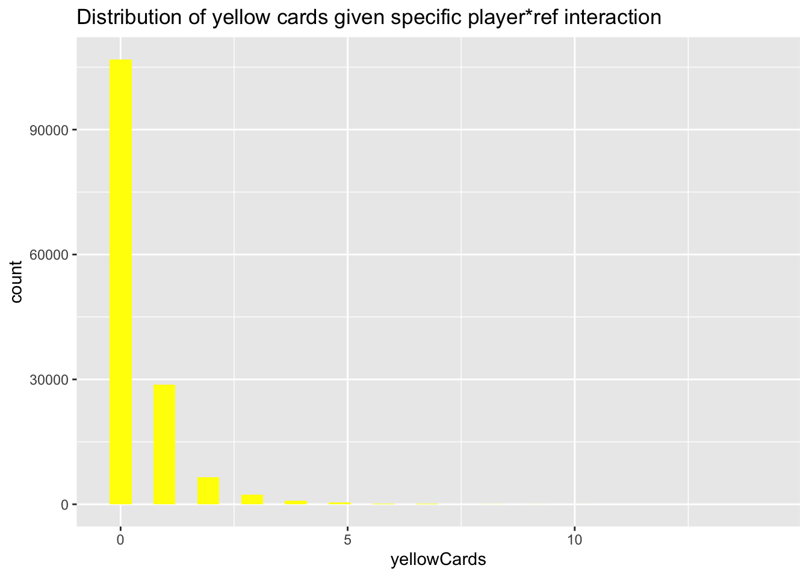
Most player by referee interactions resulted in no yellow cards at all, as expected.
red_cards |>
ggplot() +
aes(redCards) +
geom_histogram(fill = "red") +
ggtitle("Distribution of red cards given specific player*ref interaction") +
xlab("N red cards")`stat_bin()` using `bins = 30`. Pick better value with `binwidth`.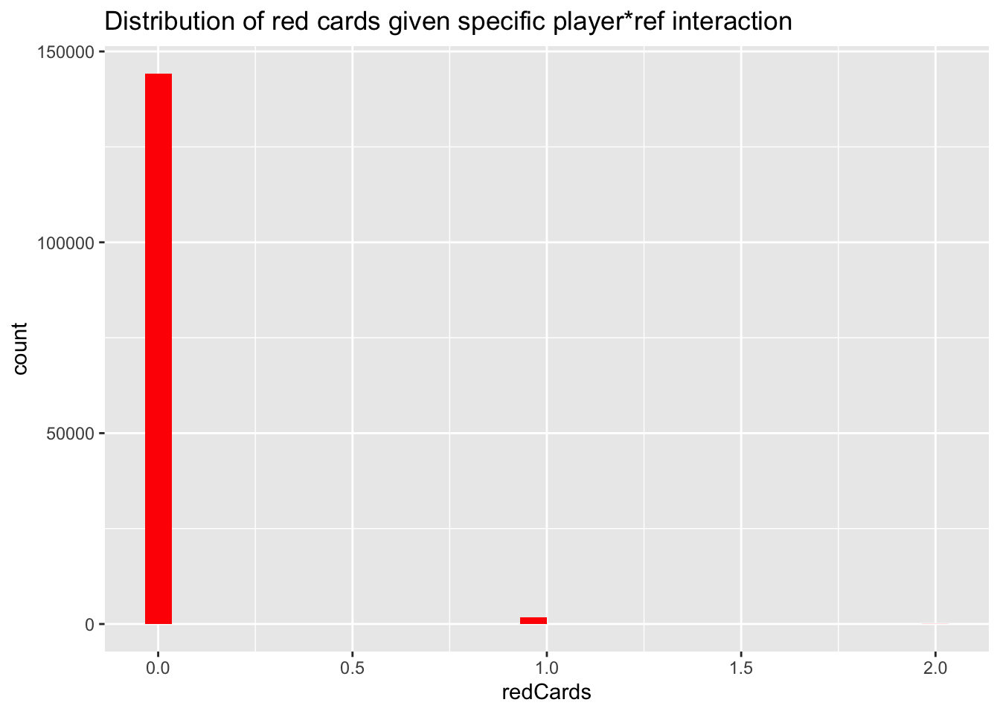
And there are relatively few red cards, too.
n_red_cards <- red_cards |>
dplyr::filter(redCards > 0)
xtabs(formula = ~ redCards, data = red_cards)redCards
0 1 2
144219 1784 25 Specifically, there are \(n=\) 1809 red cards, or \(p=\) 0.012 of all player/referee interactions. So, these are rare events in the database. But there are some interactions with two red cards.
n_red_cards |>
dplyr::filter(redCards == 2) |>
dplyr::select(playerShort, refNum) |>
dplyr::arrange(refNum, playerShort) |>
knitr::kable(format = 'html') |>
kableExtra::kable_classic()| playerShort | refNum |
|---|---|
| bodipo | 140 |
| antonio-lopez_2 | 367 |
| javi-martinez | 432 |
| jonas | 432 |
| phil-jagielka | 487 |
| cyril-jeunechamp | 586 |
| sergio-ramos | 804 |
| aly-cissokho | 985 |
| eugen-polanski | 1114 |
| emmanuel-adebayor | 1214 |
| jose-nunes | 1349 |
| jesus-rueda | 1574 |
| marc-planus | 1696 |
| de-lucas | 1886 |
| fallou-diagne | 1931 |
| laurent-koscielny | 2080 |
| saber-khelifa | 2246 |
| ivo-ilicevic | 2370 |
| fabien-audard | 2796 |
| cristiano-ronaldo | 2803 |
| gary-cahill | 2822 |
| lee-cattermole | 2822 |
| cyril-jeunechamp | 2961 |
| mouhamadou-dabo | 2961 |
| rafael-van-der-vaart | 3099 |
It doesn’t look like any of the dyads that yielded two red cards involve repeats.
Just for fun, let’s see how red and yellow cards relate to one another. We add some jitter and use alpha=.1 to make it easier to see any pattern.
red_cards |>
ggplot() +
aes(x = yellowCards, y = redCards) +
geom_jitter(alpha = .1, width = .2, height = .2) +
geom_smooth(method = "lm") +
ggtitle("N yellow vs. N red cards for each player by referee combination") +
xlab("N yellow cards") +
ylab("N red cards")`geom_smooth()` using formula = 'y ~ x'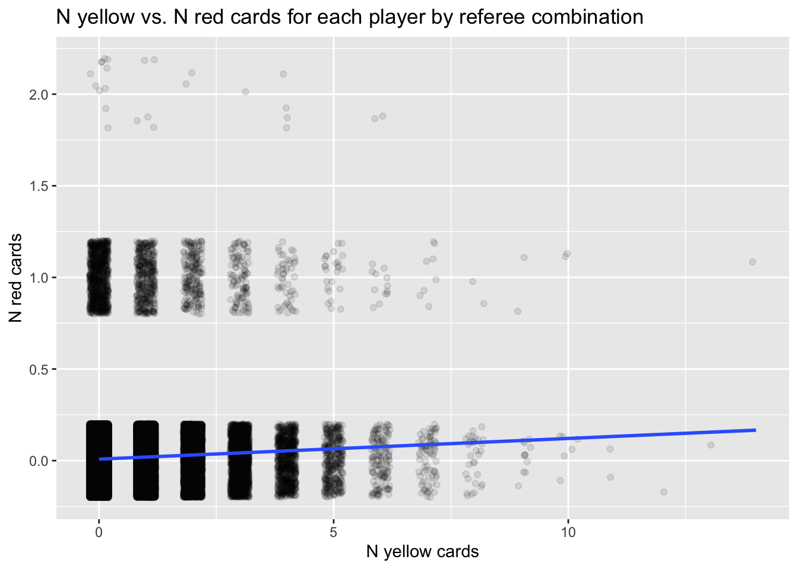
Let’s group by player and see how the number of yellow and red cards appear as a function of player.
by_player |>
ggplot() +
aes(x = n_refs) +
geom_histogram() +
ggtitle("Distribution of referee interactions for each player")`stat_bin()` using `bins = 30`. Pick better value with `binwidth`.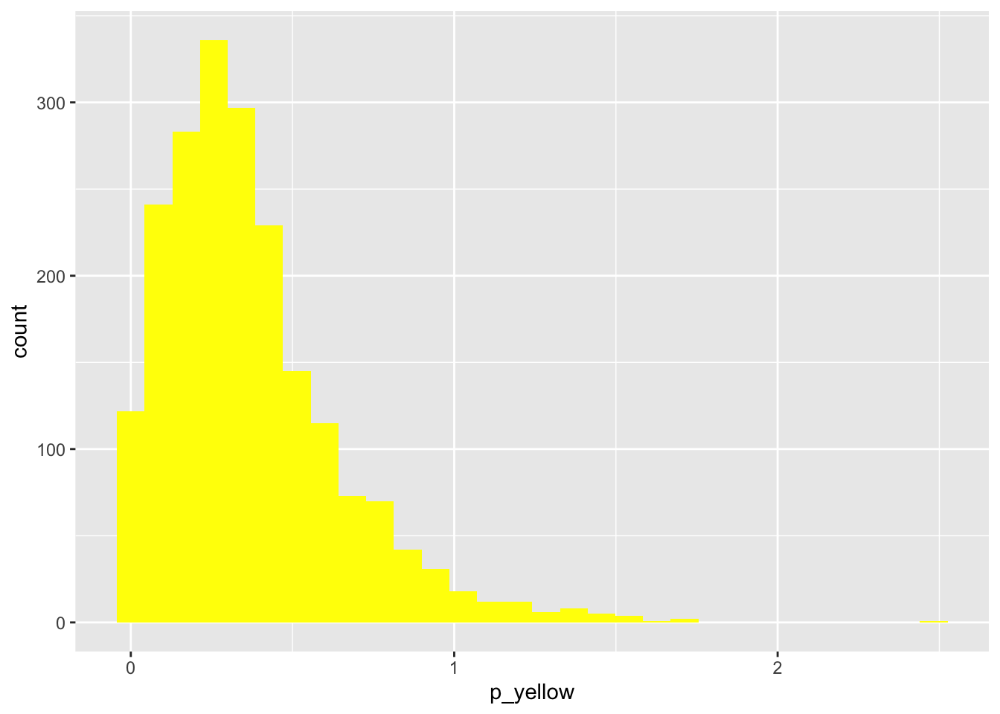
Now, let’s look at these distributions.
by_player |>
ggplot() +
aes(x = p_yellow) +
geom_histogram(fill = "yellow") +
ggtitle("Proportion of referee interactions with yellow cards")`stat_bin()` using `bins = 30`. Pick better value with `binwidth`.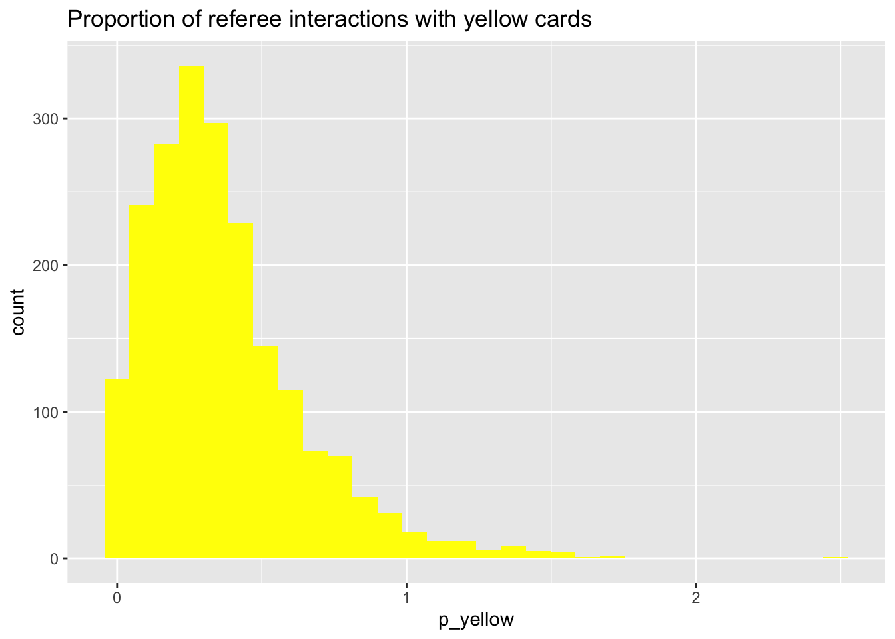
by_player |>
ggplot() +
aes(x = p_red) +
geom_histogram(fill = "red") +
ggtitle("Proportion of referee interactions with red cards")`stat_bin()` using `bins = 30`. Pick better value with `binwidth`.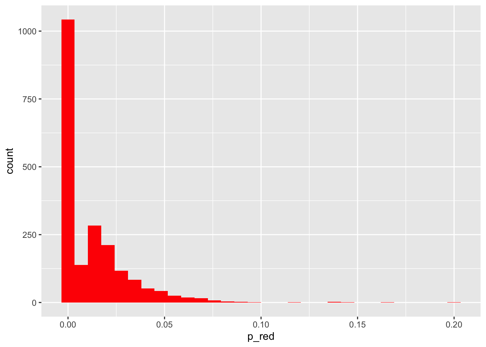
So, there’s something odd going on with p_yellow. This should be in [0,1].
# A tibble: 63 × 6
playerShort n_refs n_yellow n_red p_yellow p_red
<chr> <int> <dbl> <dbl> <dbl> <dbl>
1 adam-bodzek 56 66 0 1.18 0
2 aduriz 63 68 4 1.08 0.0635
3 albelda 147 197 6 1.34 0.0408
4 alberto-botia 45 69 3 1.53 0.0667
5 alexis 53 77 4 1.45 0.0755
6 allan-nyom 37 42 0 1.14 0
7 amorebieta 85 93 4 1.09 0.0471
8 apono 43 45 1 1.05 0.0233
9 arribas_2 38 48 2 1.26 0.0526
10 ballesteros 110 128 5 1.16 0.0455
# ℹ 53 more rowsWait, a player can get more than one yellow card per referee interactdion. Doh!
Let’s see if the yellow and red cards relate to one another.
Let’s try to visualize the ratings of skin tone along side this.
by_player_skin |>
ggplot() +
aes(x = skin, y = n_yellow, group = as.factor(skin)) +
geom_violin() +
geom_point(color = "yellow") +
ggtitle("Distribution of player skin tone and number of yellow cards given")Warning: Removed 468 rows containing non-finite values (`stat_ydensity()`).Warning: Removed 468 rows containing missing values (`geom_point()`).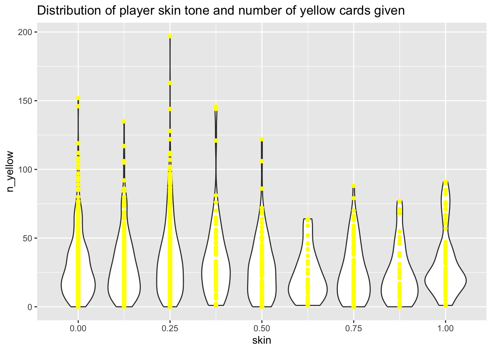
by_player_skin |>
ggplot() +
aes(x = skin, y = n_yellow) +
geom_point(color = "yellow") +
geom_smooth(method = "lm") +
ggtitle("Distribution of player skin tone and number of yellow cards given")`geom_smooth()` using formula = 'y ~ x'Warning: Removed 468 rows containing non-finite values (`stat_smooth()`).Warning: Removed 468 rows containing missing values (`geom_point()`).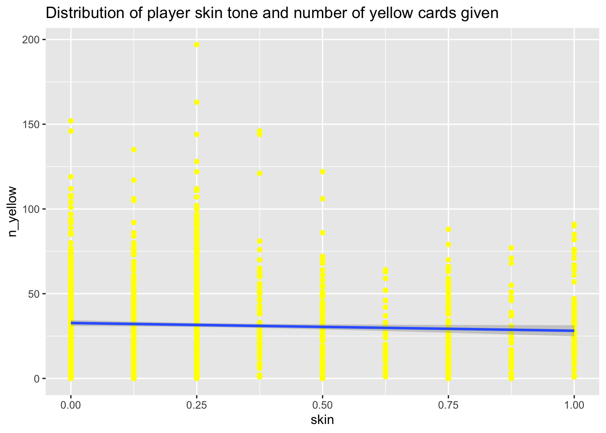
by_player_skin |>
ggplot() +
aes(x = skin, y = p_yellow, group = as.factor(skin)) +
geom_violin() +
geom_point(color = "yellow") +
ggtitle("Distribution of player skin tone and proportion of yellow cards given")Warning: Removed 468 rows containing non-finite values (`stat_ydensity()`).Warning: Removed 468 rows containing missing values (`geom_point()`).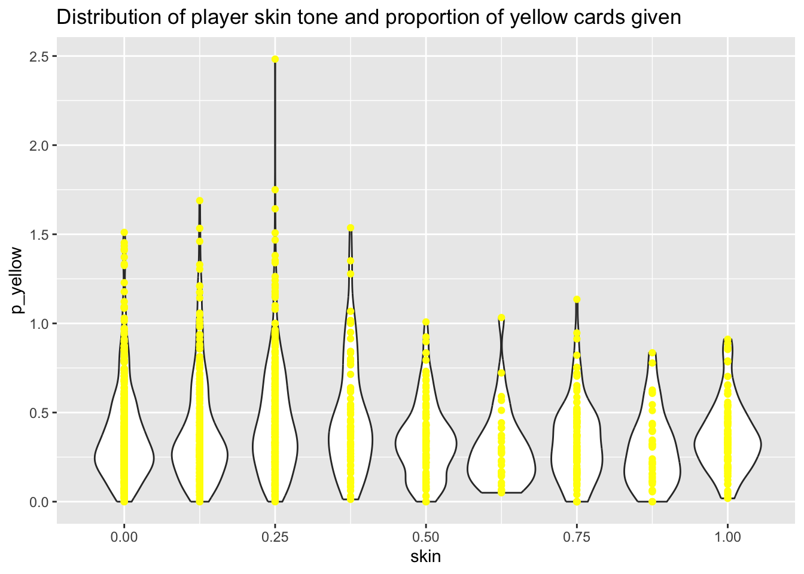
by_player_skin |>
ggplot() +
aes(x = skin, y = p_yellow) +
geom_point(color = "yellow") +
geom_smooth(method = "lm") +
ggtitle("Distribution of player skin tone and proportion of yellow cards given")`geom_smooth()` using formula = 'y ~ x'Warning: Removed 468 rows containing non-finite values (`stat_smooth()`).Warning: Removed 468 rows containing missing values (`geom_point()`).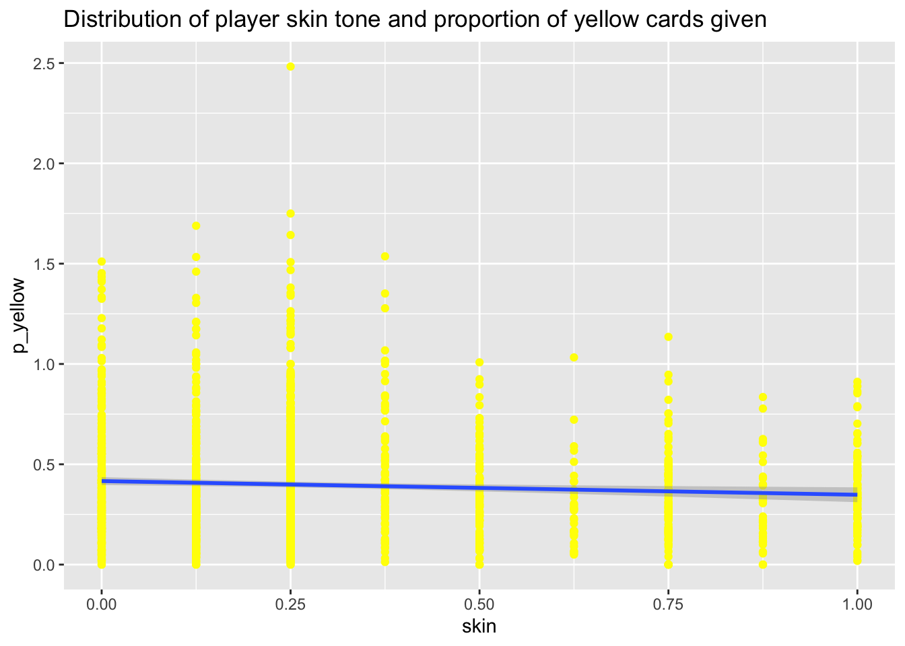
by_player_skin |>
ggplot() +
aes(x = skin, y = n_red, group = as.factor(skin)) +
geom_violin() +
geom_point(color = "red") +
ggtitle("Distribution of player skin tone and number of red cards given")Warning: Removed 468 rows containing non-finite values (`stat_ydensity()`).Warning: Removed 468 rows containing missing values (`geom_point()`).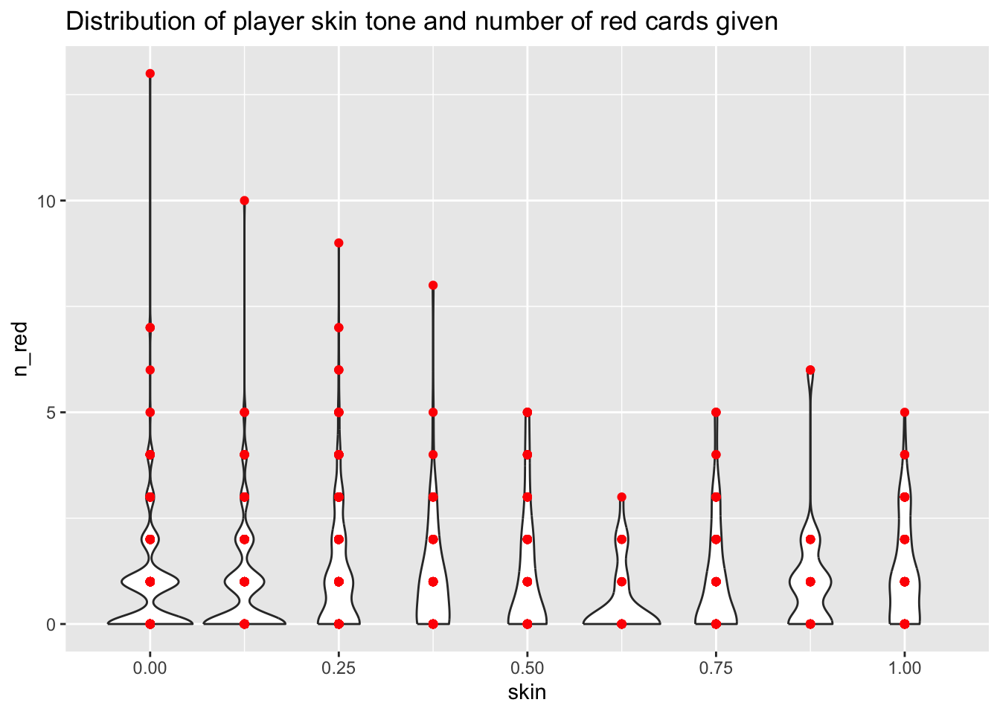
by_player_skin |>
ggplot() +
aes(x = skin, y = n_red) +
geom_point(color = "red") +
geom_smooth(method = "lm") +
ggtitle("Distribution of player skin tone and proportion of red cards given")`geom_smooth()` using formula = 'y ~ x'Warning: Removed 468 rows containing non-finite values (`stat_smooth()`).Warning: Removed 468 rows containing missing values (`geom_point()`).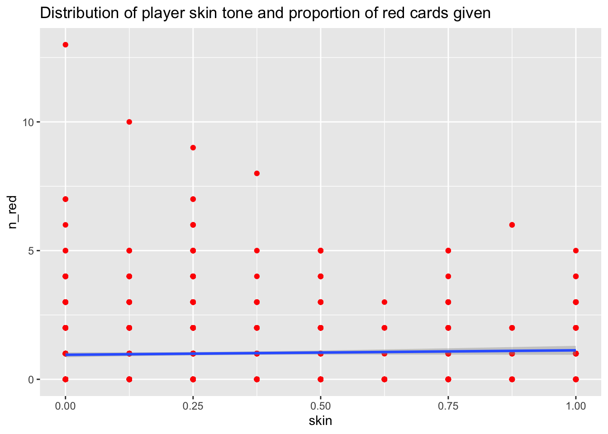
by_player_skin |>
ggplot() +
aes(x = skin, y = p_red, group = as.factor(skin)) +
geom_violin() +
geom_point(color = "red") +
ggtitle("Distribution of skin tone and red cards given")Warning: Removed 468 rows containing non-finite values (`stat_ydensity()`).Warning: Removed 468 rows containing missing values (`geom_point()`).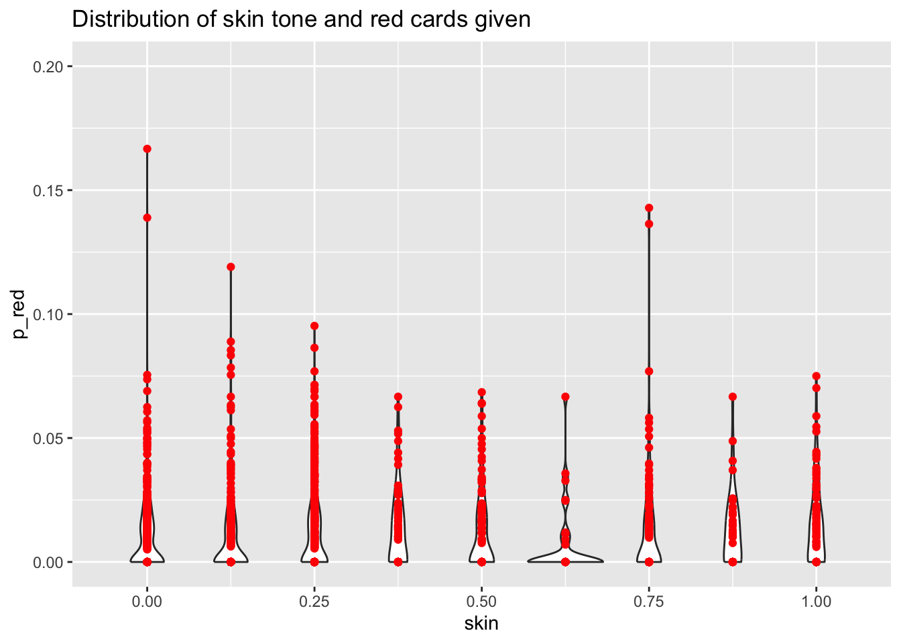
by_player_skin |>
ggplot() +
aes(x = skin, y = p_red) +
geom_point(color = "red") +
geom_smooth(method = "lm") +
ggtitle("Distribution of player skin tone and proportion of red cards given")`geom_smooth()` using formula = 'y ~ x'Warning: Removed 468 rows containing non-finite values (`stat_smooth()`).Warning: Removed 468 rows containing missing values (`geom_point()`).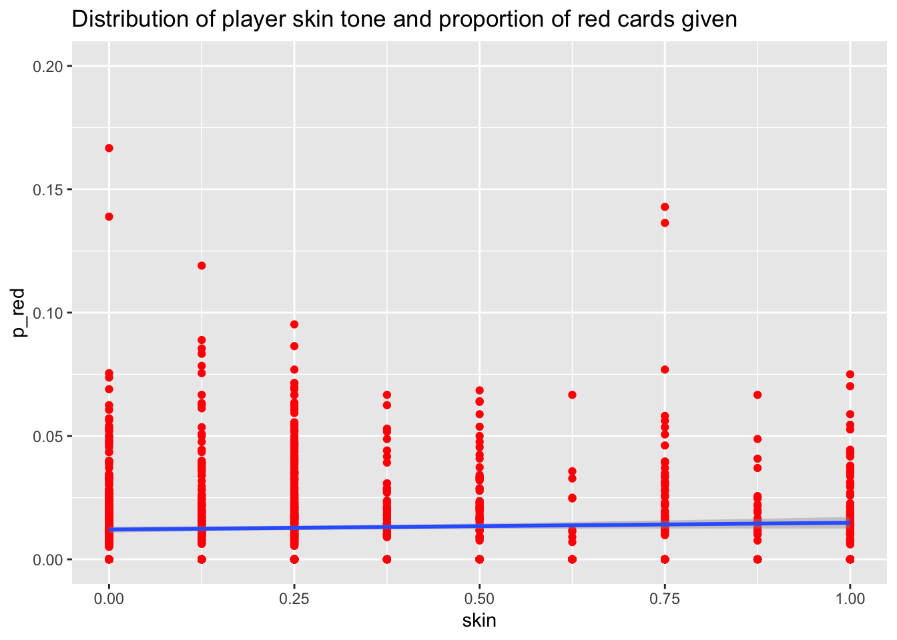
by_player_skin |>
ggplot() +
aes(x = n_yellow, y = n_red, group = 1) +
geom_point(aes(size = as.factor(skin))) +
geom_smooth() +
ggtitle("Number yellow vs. (per ref encounter/game) red cards")Warning: Using size for a discrete variable is not advised.`geom_smooth()` using method = 'gam' and formula = 'y ~ s(x, bs = "cs")'Warning: Removed 468 rows containing missing values (`geom_point()`).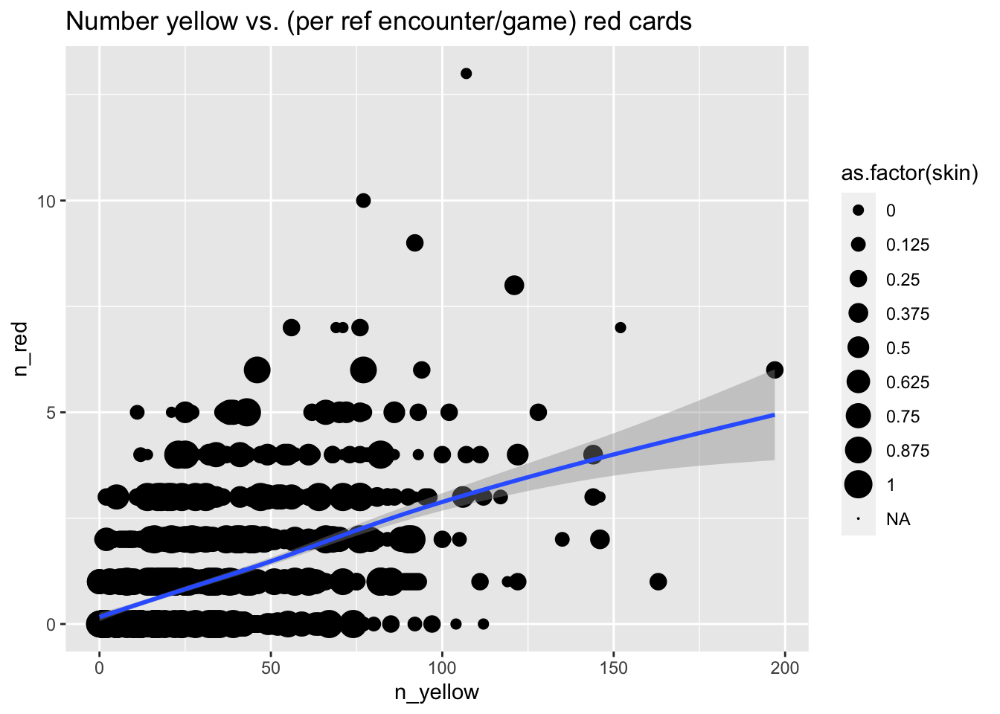
by_player_skin |>
ggplot() +
aes(x = p_yellow, y = p_red, group = 1) +
geom_point(aes(size = as.factor(skin))) +
geom_smooth() +
ggtitle("Yellow vs. (per ref encounter/game) red cards")Warning: Using size for a discrete variable is not advised.`geom_smooth()` using method = 'gam' and formula = 'y ~ s(x, bs = "cs")'Warning: Removed 468 rows containing missing values (`geom_point()`).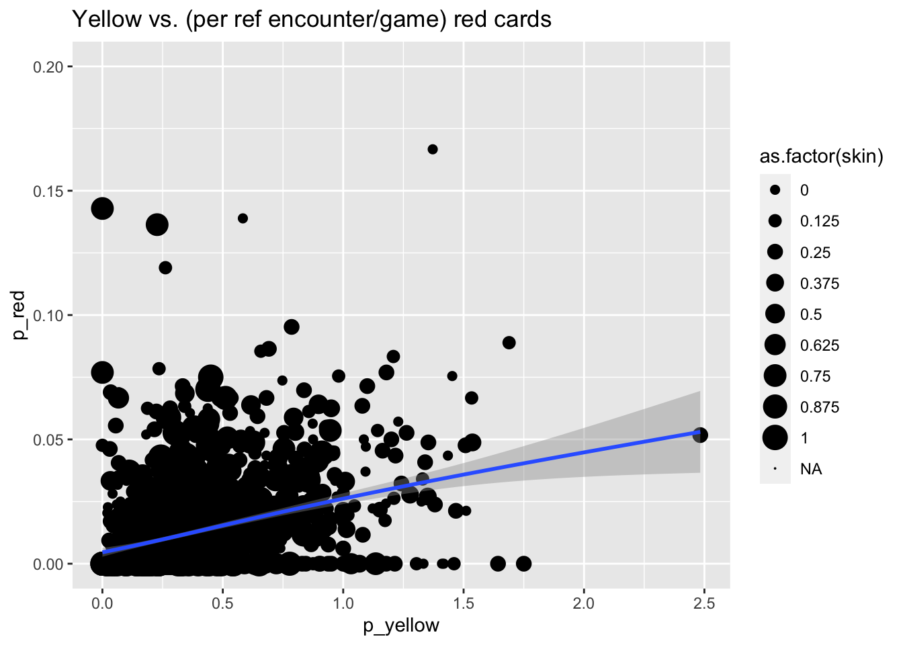
That’s hard to read, so let’s focus on players with skin > .5.
by_player_skin |>
dplyr::filter(skin > .5) |>
ggplot() +
aes(x = n_yellow, y = n_red) +
geom_point(aes(size = as.factor(skin))) +
geom_smooth() +
ggtitle("Yellow vs. (per ref encounter/game) red cards for darker-skinned players")Warning: Using size for a discrete variable is not advised.`geom_smooth()` using method = 'loess' and formula = 'y ~ x'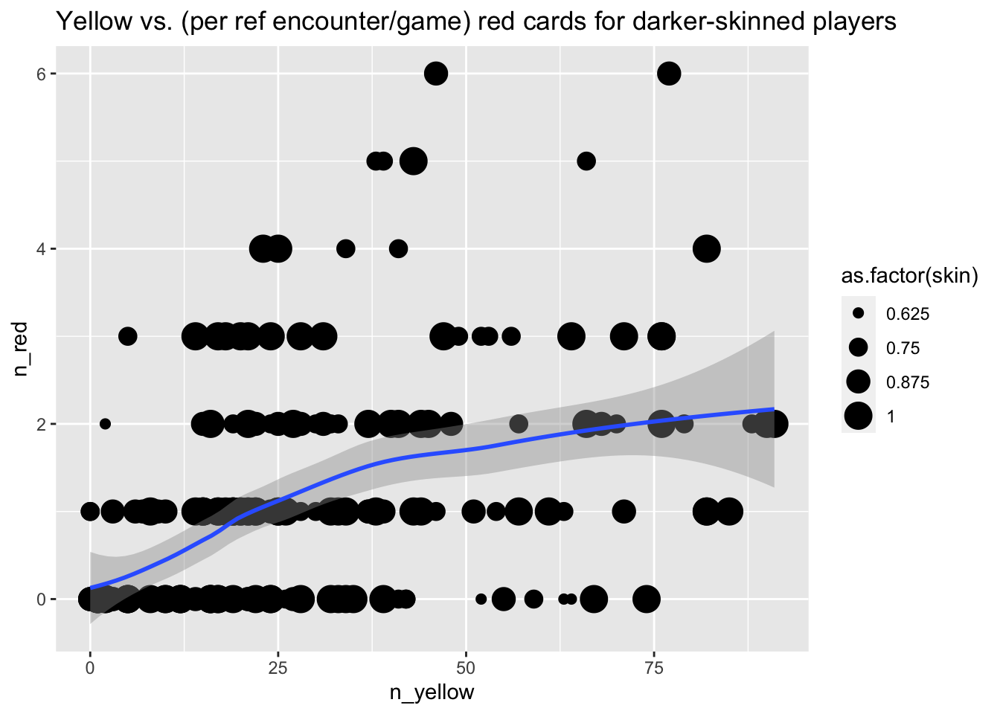
by_player_skin |>
dplyr::filter(skin > .5) |>
ggplot() +
aes(x = p_yellow, y = p_red) +
geom_point(aes(size = as.factor(skin))) +
geom_smooth() +
ggtitle("Yellow vs. (per ref encounter/game) red cards for darker-skinned players")Warning: Using size for a discrete variable is not advised.`geom_smooth()` using method = 'loess' and formula = 'y ~ x'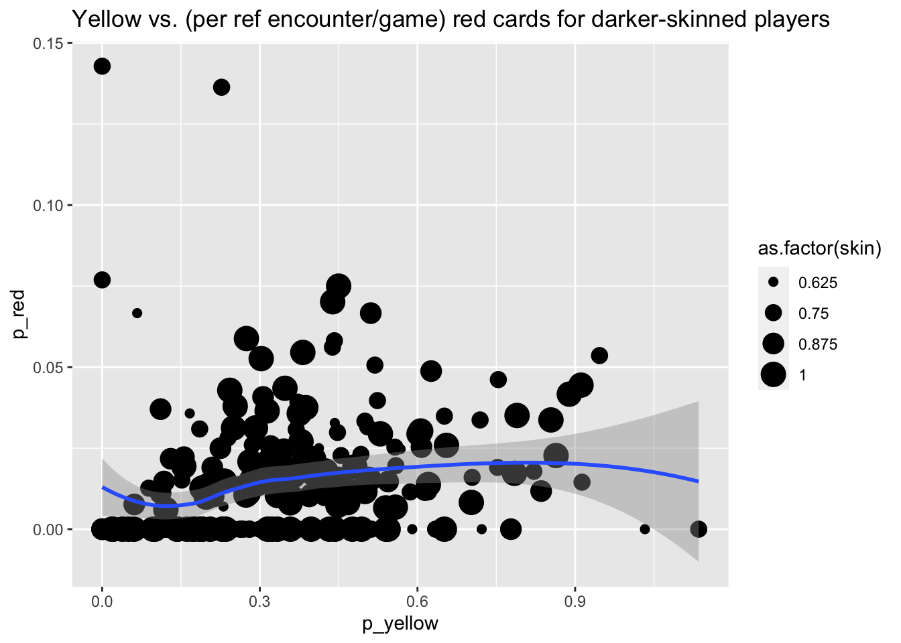
And for completeness, let’s look at the lighter-skinned players.
by_player_skin |>
dplyr::filter(skin <= .5) |>
ggplot() +
aes(x = n_yellow, y = n_red) +
geom_point(aes(size = as.factor(skin))) +
geom_smooth() +
ggtitle("Yellow vs. red cards (per ref encounter/game) for lighter skinned players")Warning: Using size for a discrete variable is not advised.`geom_smooth()` using method = 'gam' and formula = 'y ~ s(x, bs = "cs")'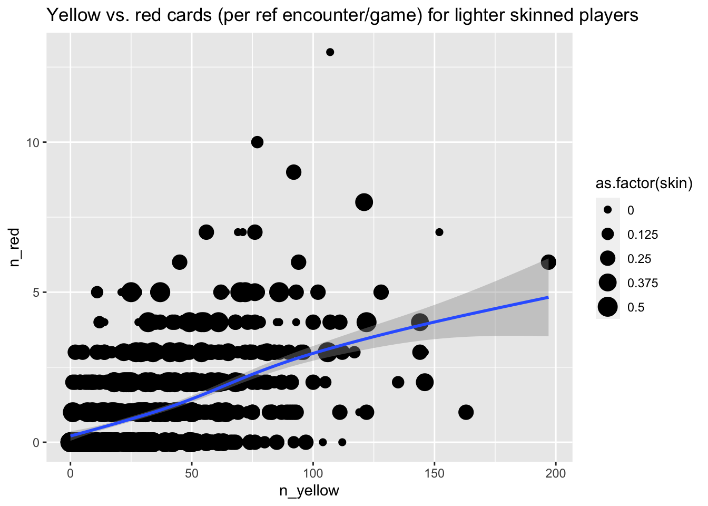
by_player_skin |>
dplyr::filter(skin <= .5) |>
ggplot() +
aes(x = p_yellow, y = p_red) +
geom_point() +
geom_smooth() +
ggtitle("Yellow vs. red cards (per ref encounter/game) for lighter skinned players")`geom_smooth()` using method = 'gam' and formula = 'y ~ s(x, bs = "cs")'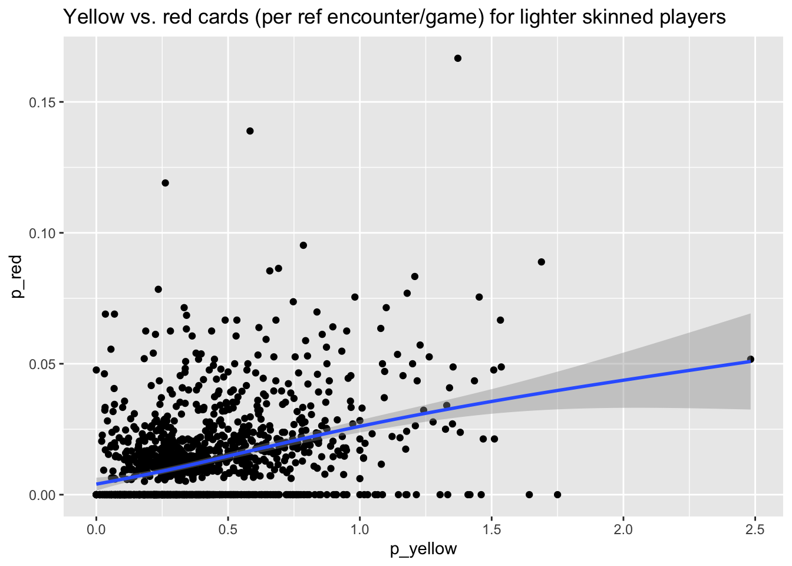
Now let’s focus on the referees.
by_ref |>
ggplot() +
aes(x = n_interactions) +
geom_histogram() +
ggtitle("Player interactions per referee")`stat_bin()` using `bins = 30`. Pick better value with `binwidth`.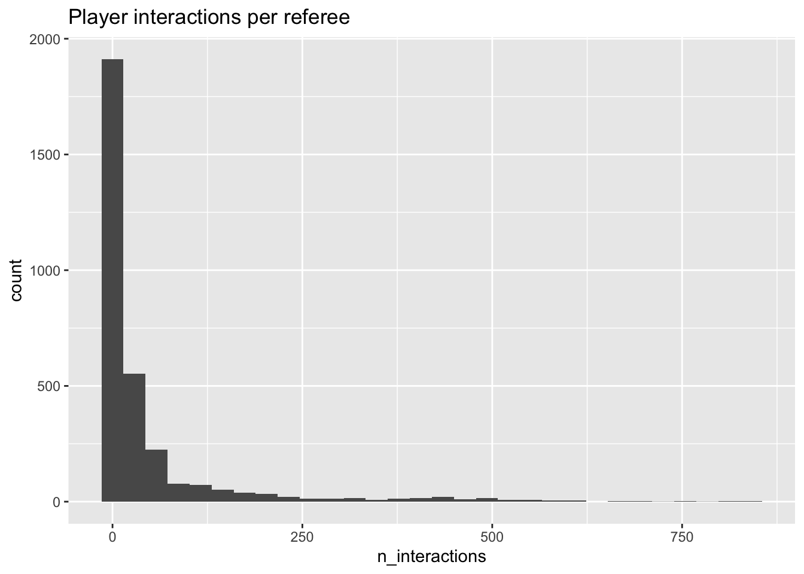
by_ref |>
ggplot() +
aes(x = n_yellow) +
geom_histogram(fill = "yellow") +
ggtitle("N yellow cards given by referees")`stat_bin()` using `bins = 30`. Pick better value with `binwidth`.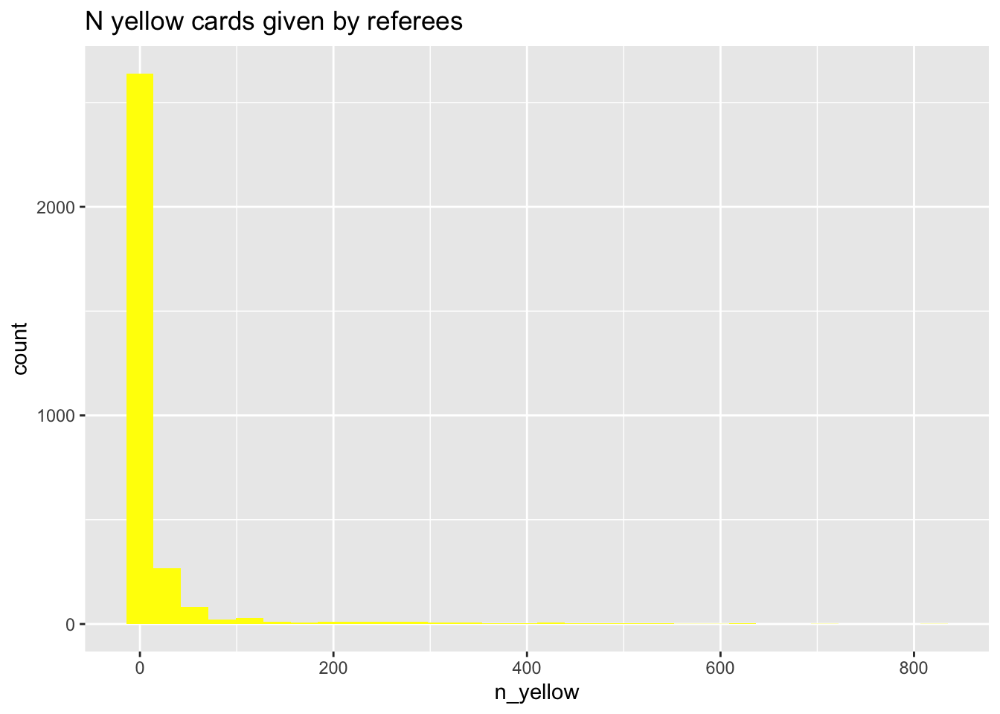
by_ref |>
ggplot() +
aes(x = p_yellow) +
geom_histogram(fill = "yellow") +
ggtitle("Yellow cards per player interaction given by referees")`stat_bin()` using `bins = 30`. Pick better value with `binwidth`.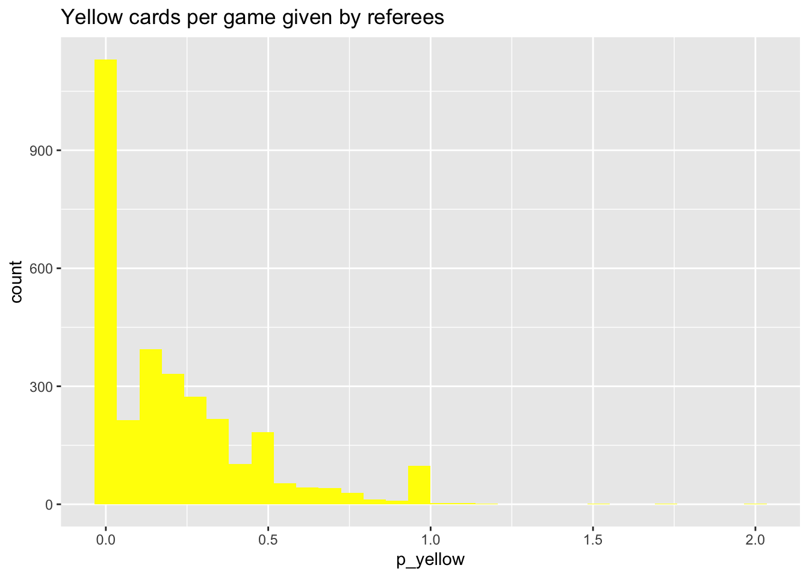
by_ref |>
ggplot() +
aes(x = n_red) +
geom_histogram(fill = "red") +
ggtitle("N red cards given by referees")`stat_bin()` using `bins = 30`. Pick better value with `binwidth`.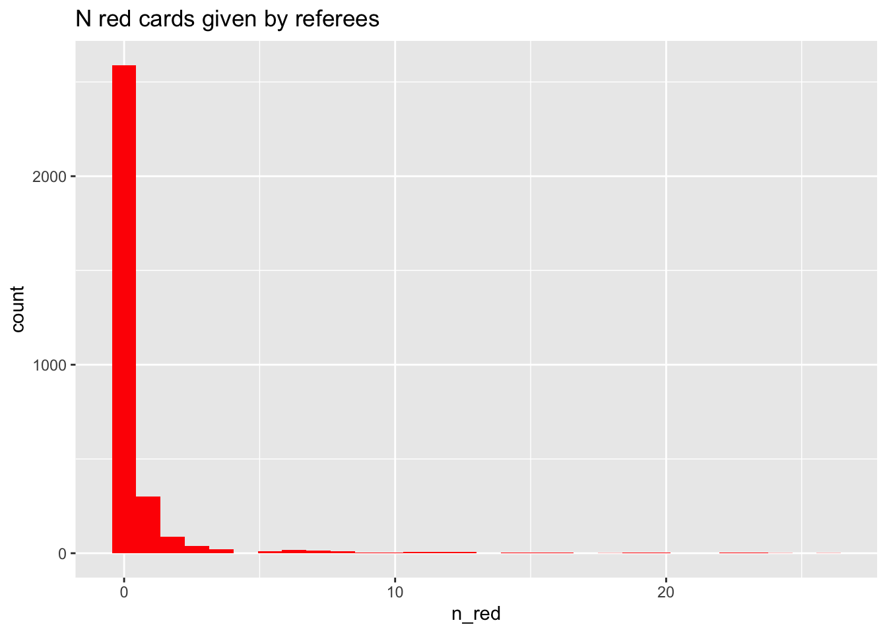
by_ref |>
ggplot() +
aes(x = p_red) +
geom_histogram(fill = "red") +
ggtitle("Red cards per player interaction given by referees")`stat_bin()` using `bins = 30`. Pick better value with `binwidth`.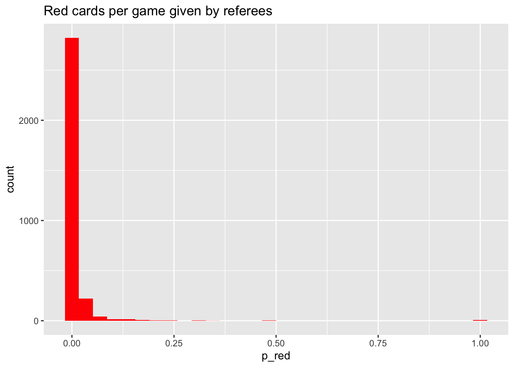